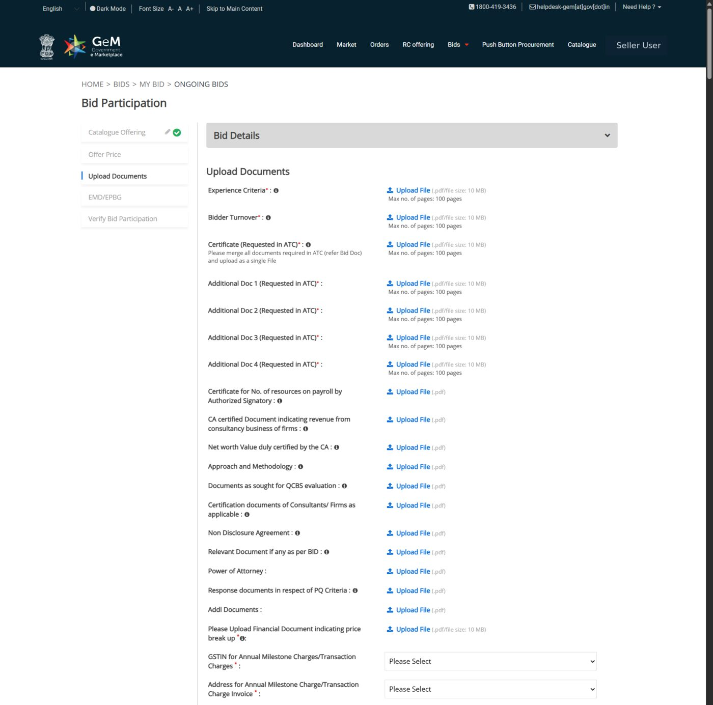
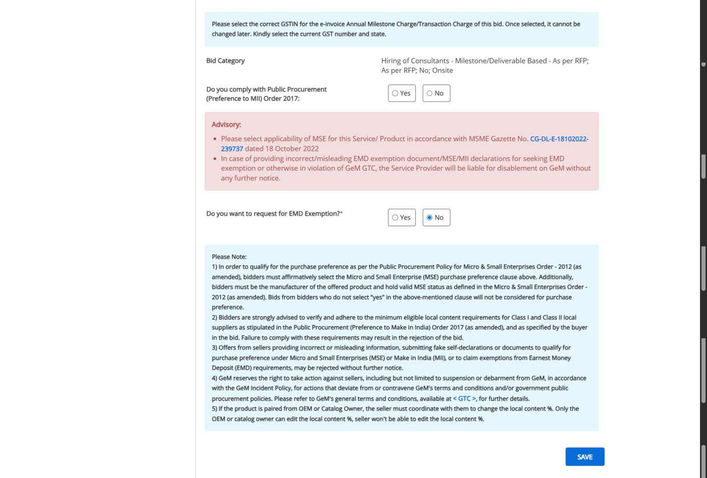

GeM
Today's focusGovernment e-Marketplace. Central ministries, departments, PSUs, autonomous bodies and many state bodies. Goods and services listed on GeM must be bought through it.
From spotting a bid on the Government e-Marketplace to clicking final submit, the way our bid team actually does it.
A full practice tender at medium difficulty, built from patterns in our past bids, with six exercises and an answer key.
A nine-question quiz and the golden rules to pin above your desk.
Anything marked Try it is live. Change the numbers, click the fields, copy the prompts. Nothing you type leaves your browser.
Press N to open notes for the current slide. They hold the talking points and the stories from our past bids.
Send the link to the team. Every slide has its own address, so you can point someone straight at "File limits" or the practice tender.
GeM changes menu names and layouts often. Learn the logic of each step, not the exact button position. When the portal and this deck disagree, the portal and the bid document win.
There is no single portal. These are the places a communications agency like ours should watch.
Government e-Marketplace. Central ministries, departments, PSUs, autonomous bodies and many state bodies. Goods and services listed on GeM must be bought through it.
Central Public Procurement Portal. Central ministry and CPSE tenders run outside GeM, usually on NIC's e-procurement system with a digital signature certificate.
Each state runs its own portal. Tourism, information and public relations departments, and state PSUs publish here.
Defence e-procurement for services and the armed forces. Occasional communication and event mandates.
Indian Railways e-procurement. Mostly works and goods, but zones and PSUs under Railways also tender publicity work.
Large PSUs, banks and regulators often run their own e-tender systems and also post a notice on CPPP.
Not a tender, but a door to many: some buyers only invite empanelled agencies, and their rates often anchor government pricing.
UN agencies and bank-funded projects in India. Different rules and formats, with their own registration.
Useful to spot bids early. Never bid from an aggregator's copy. Always download the documents from the source portal.
Under the General Financial Rules 2017 (Rule 149), ministries and departments must procure goods and services that are available on GeM through GeM. Social media agencies, consultants and event services are all listed categories.
Every large government mandate our bid team prepared this year ran on GeM: social media management, social listening and ORM, PR and integrated communication, and media consulting.
Every GeM bid has the same skeleton: a system-generated bid document, buyer's additional terms (ATC), the same five participation tabs and the same upload rules. Learn it once and reuse it.
What we cover also applies to CPPP and state portals with small changes: a digital signature certificate instead of eSign, and folder-wise uploads instead of named slots.
Buyers describe the same work in many ways. Search all of them.
social media · digital media · content development · community management · influencer · YouTube · newsletter · SEO · website
social listening · media monitoring · online reputation · ORM · sentiment · dashboard · fact check · crisis communication
public relations · PR agency · media relations · communication strategy · IEC · outreach · campaign · branding
creative agency · audio visual · film · documentary · video production · animation · photography · print collateral
event management · conference · summit · exhibition · pavilion · stall design · roadshow
consultant · consultancy · project management unit · PMU · media consultant · strategic partner
The category decides which service offering you need and which upload slots GeM shows you.
Page one of the GeM bid document tells you most of what you need. Read these fields before anything else.
Click any field on the left.
RFPs run 60 to 120 pages plus ATC files and corrigenda. Claude reads all of it in minutes. Your job is to direct it and check it.
Tell Claude this order in every project. When two documents disagree, it must say which one wins and why.
Pre-qualification is pass or fail. Fail one line and the technical bid is never opened.
| Typical criterion | Evidence that proves it | Owner | Watch out for |
|---|
Most GeM services bids use the same past-experience clause: similar completed work in the last three financial years plus the current one.
| Option | Number of projects | Each at least |
|---|---|---|
| A | 3 similar completed services | 40% of estimate |
| B | 2 similar completed services | 50% of estimate |
| C | 1 similar completed service | 80% of estimate |
You need to meet one option. The RFP may add its own rules: only government clients, a minimum duration, or ongoing projects counted only after a set share has been paid.
Sample values from the practice tender. Only count projects that meet the RFP's definition of "similar".
The bid document says whether Micro and Small Enterprises or DPIIT-registered startups are relaxed from turnover and experience. If you claim it, upload the proof with the bid.
Under GeM terms, MSE service providers can be exempt from EMD (traders are not). A buyer's ATC cannot take that exemption away.
Some buyers accept a notarised declaration on stamp paper (GFR Rule 170) instead of an EMD instrument. We used this route in a 2026 bid.
Incorrect or misleading EMD exemption, MSE or Make in India declarations can lead to disablement on GeM without further notice. One wrong click can lock the whole company out of the marketplace.
Bid manager, the account lead who would run the work, Finance and the authorised signatory. Thirty minutes, using the Claude summary and this scorecard. Record the decision in the pipeline sheet.
A bid we win on bad terms costs more than a bid we lose. These clauses appeared across our 2026 RFPs.
Often 0.5% of contract value per week of delay, capped at 10%. Reaching the cap can allow termination.
Usually 3% of contract value as an ePBG or bank guarantee, within 14 to 15 days of award, valid beyond the contract.
Monthly or quarterly in arrears, against accepted deliverables. No advance. Invoices with work-done reports and attendance.
Rates locked for the full term, sometimes with a fixed yearly increment. Check whether the price is GST-inclusive or exclusive.
Buyer can raise or cut quantity or duration, typically by up to 25%, at award and after. Price for that flexibility.
Dedicated team, on-site days, listening tools, travel and equipment at our cost. Physical presentations with the full team.
Most of our bids are Quality and Cost Based Selection at 70:30. Only bidders above the technical cut-off have their price opened.
Final = 70 × (Your tech ÷ Highest tech) + 30 × (Lowest price ÷ Your price)
| Bidder | Technical (of 100) | Price (₹ crore) | Tech pts | Price pts | Final |
|---|
| Criterion (practice tender) | How marks are given | Max | Ours |
|---|
| Kind | Examples | Lead time | Owner |
|---|---|---|---|
| Company standard | Certificate of Incorporation, MoA/AoA, PAN, GST, Udyam/MSME, EPF and ESIC registrations | Same day, from the vault | Documentation |
| Third-party certificates | CA or statutory auditor certificate for turnover and net worth with UDIN; client completion certificates | 3 to 5 days for the CA; weeks for clients | Finance · Account leads |
| RFP-format annexures | Bid submission letter, bidder profile, non-blacklisting, land border (GFR 144(xi)), no-deviation, conflict of interest | 1 to 2 days | Documentation |
| Stamp paper and notarised | Integrity Pact, Power of Attorney, Bid Securing Declaration | 1 to 2 days, needs physical stamp paper, notary, witnesses | Documentation · Admin |
| Technical proposal | Approach and methodology, work plan, case studies, sample campaign, CVs in the prescribed format, presentation | 5 to 10 days | Strategy · Creative · HR |
| Financial | Price on GeM, price break-up document, financial submission letter, rate cards | 2 days, after the decision | Finance · Leadership |
AnnexIV_CA_Turnover_Certificate.pdf.No price, rate, fee or cost anywhere in the technical bid. Not in a case study, a CV, the presentation or a sample invoice. Price lives only in the Offer Price tab and the price break-up file.
Half of every bid is the same documents. Keep them current in one place so the team spends its time on the parts that win marks.
Bid Vault/
├── 00_Company/ incorporation, MoA-AoA, PAN, GST, Udyam, startup
├── 01_Finance/ audited statements (3 FY), CA certificates
├── 02_Experience/
│ ├── by_client/ work order + completion certificate per project
│ └── index.xlsx client, scope tags, dates, govt or private
├── 03_People/ CV bank in a standard format, EPF/ESIC records
├── 04_Declarations/ editable templates for common annexures
├── 05_Credentials/ case studies, awards, sample work
├── 06_Signatory/ PoA, board resolution, eSign holder details
└── Bids/
└── GEM-2026-B-xxxx/ tracker, RFP set, drafts, final PDFs
The vault holds audited financials and personal data in CVs. Limit access to the bid team and never share it outside approved tools.
One bid manager owns the tracker. Every document has exactly one owner and one deadline.
All documents final, signed and merged four days before the GeM deadline. Our trackers this year set it at T-4 or T-5 for every bid.
The portal slows down near popular deadlines, signatories travel, and a corrigendum can arrive two days before closing.
Every bid this year ran on one spreadsheet with the same tabs. Claude drafts it from the RFP; the bid manager owns it.
Bid at a glance, key dates, EMD, evaluation method, scoring quick reference.
Every document with RFP reference, page, format, upload slot, owner, status.
Action items per team with dependencies and internal deadlines.
Each PQ criterion, exact wording, compliant yes or no, evidence.
Max marks, our target, action to maximise each line.
Rejection-level risks, contradictions, corrigendum changes.
Pre-bid, queries, representation window, deadline, opening, validity.
Each required role, minimum experience, proposed person, CV status.
| S.No. | Document | RFP ref · page | Upload slot | Owner | Status |
|---|---|---|---|---|---|
| A3 | CA certificate, turnover and net worth (UDIN) | Annexure IV · p. 44 | Bidder Turnover | Finance | Done |
| A8 | Integrity Pact on ₹100 stamp paper | Annexure VI · p. 52 | Additional Doc 2 | Documentation | With signatory |
| B3 | CVs of 10 proposed members | Annexure X · p. 58 | Additional Doc 3 | HR | 3 pending |
After you click Participate on a bid, GeM walks you through these tabs. Save as you go; nothing is submitted until the last one.


These are the limits on the standard GeM upload slots. Plan the files to fit before the last day.
| File | Size (MB) | Pages | Result |
|---|
The rejection clauses we flagged as critical across our 2026 trackers.
| Severity | Mistake | What it costs |
|---|---|---|
| Rejection | Any financial information in the technical bid | Outright rejection of the technical bid |
| Rejection | Integrity Pact missing, unsigned or not on the required stamp paper | Bid treated as non-responsive |
| Rejection | Conditional financial bid, or nil charges quoted | Financial bid rejected |
| Rejection | Price below a stated floor (e.g. more than 15% under the estimate) | Rejected as non-responsive |
| Rejection | Bid validity shorter than required | Non-responsive |
| Rejection | Missing EMD, exemption proof or Bid Securing Declaration | Pre-qualification fails |
| Marks lost | Proposed team member absent from the interview | That person's marks, often 2 to 5 each |
| Marks lost | Experience proof without value, dates or completion shown | Project not counted |
| Marks lost | Working from the original RFP after a corrigendum | Wrong team size, wrong turnover period, wrong forms |
A fictional bid assembled from patterns in our real ones, with a corrigendum and six traps. Open the full document in a new tab and work in pairs.
Northstar Media (fictional): 14 years old, Gurugram office, 72 employees on EPF, not an MSE. Its project list and turnover are in Section 9 of the tender document.
All names, numbers and bid details in this tender are invented for training.
Check every PQ criterion. Watch the turnover period and the experience rule.
Yes, but only because of Corrigendum 1.
Use the scorecard from section 05. Which gates and factors decide it?
Bid. All gates pass after the corrigendum. Strong strategic fit (craft and culture is a showcase category), realistic technical score around 78 to 82, workable terms. The main risk is the 10-person interview day and the price floor.
Score A1 to C4 from Northstar's profile.
About 79 out of 100. A1: 6 projects of ₹50 lakh or more gives 7 of 10. A2: turnover ₹6.3 crore gives 4 of 10. A3: two case studies, 10 of 10. B: full team present, 23 of 25 is realistic. C: 35 of 45 with a strong sample campaign. The banked marks are weak (21 of 30), so the room has to carry it.
List every annexure and supporting document with its owner.
Documentation: Annexures I, II, V, VII, VIII, IX, XII and the Integrity Pact (VI). Finance: Annexure IV (CA certificate with UDIN, new FY period), audited statements, PAN, GST, EMD of ₹6 lakh (Northstar is not an MSE), Annexure XI and price break-up. HR: Annexure X CVs for 10 people (not 12), EPF extract for 72 employees. Account leads: work orders and completion certificates for P1, P2, P3, P6 and P7, plus a CA certificate of payments received for P4. Strategy and Creative: technical proposal, two case studies, sample campaign.
The ATC pack is 180 pages and 24 MB after compression. CVs are 30 pages. Where does everything go?
The pack breaks both limits (180 pages, 24 MB), so compress it and split it by annexure order:
Each file must end up under 10 MB. Open every one after upload.
There are at least six things in this tender that would hurt a careless bidder.
Score: 0 of 9